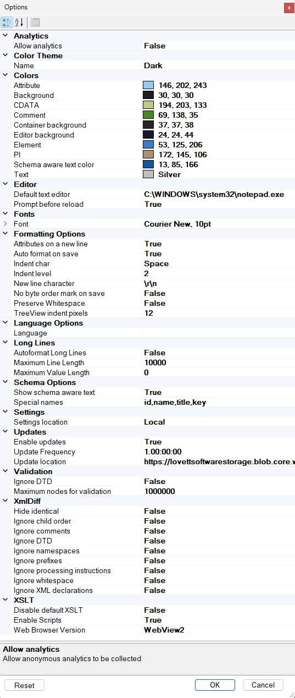

Options#
The options dialog is available from the "Options..." item under the View Menu.

Analytics#
Options that enable or disable the collection of analymous app usage information. See Analytics.
Color Theme, Colors and Fonts#
The options dialog allows you to select a color theme, light or dark, or configure the specific colors used in each type of node as well as the font used and the background color. A drop down arrow on each color lets you pick from different color palettes. You can also customize the font that is used in the XML Notepad tree view.
Formatting#
You can also configure the formatting options that are used when you save an XML file, or turn off formatting altogether.
Language#
Specify which language annotations to pick from associated XSD schemas.
Long Lines#
How to deal with editing of long lines.
Updates#
You can also configure the auto-update mechanism associated with the ClickOnce installer. If the "Enable updates" field is true, then XML Notepad will ping the specified "Update Location" for an "Updates.xml" file to see if a new version of XML Notepad is available. See Updates for more information on how this works.
Validation#
You can turn off DTD validation.
XmlDiff#
Options that control how the XmlDiff works when you compare XML documents.